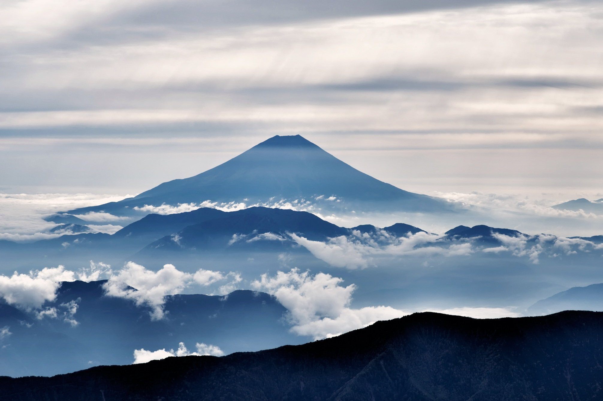
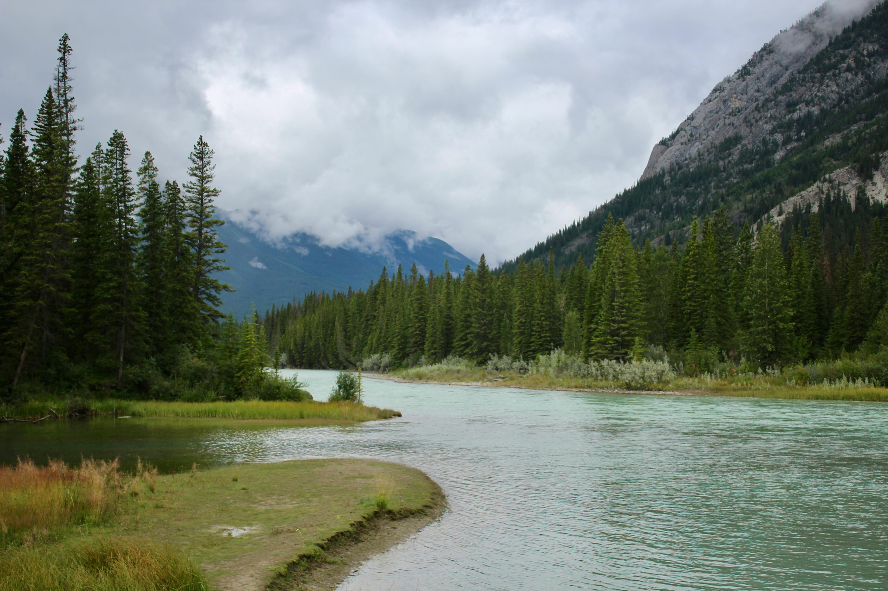
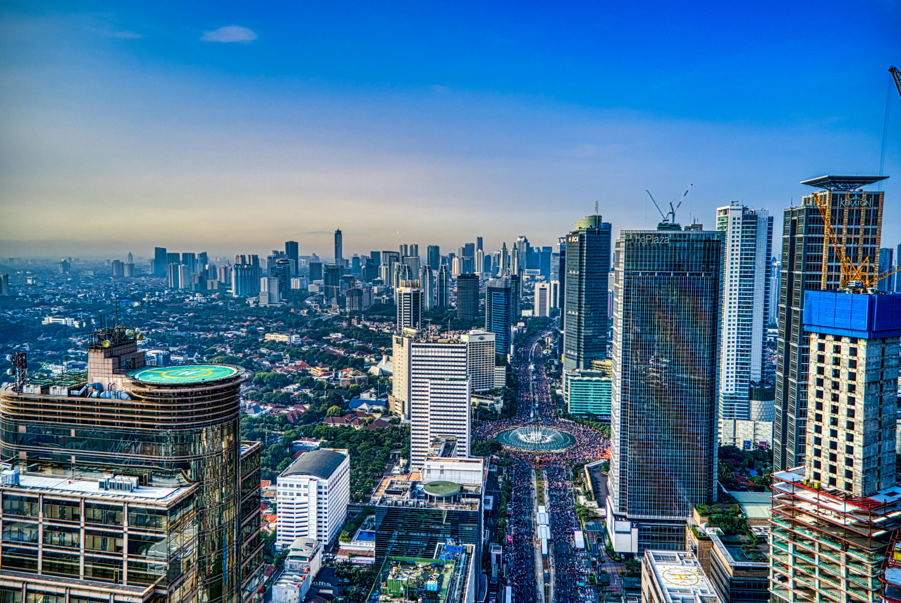
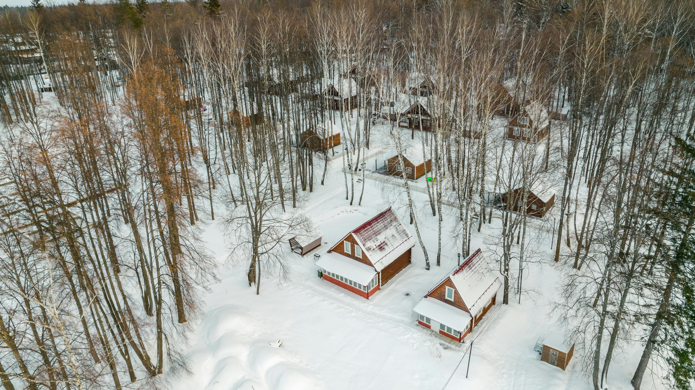

Mount Fuji
Mount Fuji is Japan's highest mountain and an iconic natural landmark. The image shows its majestic peak during sunrise or sunset, surrounded by clouds with a golden and blue sky. It represents serenity and is a popular subject in art, photography, and Japanese culture.

Mountain Peaks and Clouds
A breathtaking view of a majestic mountain surrounded by a sea of clouds. The central peak rises above the mist, creating a serene and mystical atmosphere. The layers of mountain ranges in the foreground add depth and contrast, with soft blue hues blending seamlessly into the horizon.
Himeji Castle
Himeji Castle, also known as the "White Heron Castle," is a UNESCO World Heritage Site. The image captures its pristine white structure with cherry blossoms in full bloom, symbolizing the beauty of Japanese history and architecture. It is one of the best-preserved feudal-era castles in Japan.
Cherry Blossom Branch
A stunning close-up of delicate cherry blossoms in full bloom against a clear blue sky. The vibrant pink and white petals symbolize the fleeting beauty of spring, offering a tranquil and uplifting vibe. This image captures the essence of nature’s renewal and serenity.

River Valley and Forest
A picturesque river winding through a lush green valley framed by towering pine trees and rugged mountains. The soft ripples on the water reflect the overcast sky, creating a tranquil, pristine scene that highlights the beauty of unspoiled wilderness.
Snowy Cityscape From Above
An awe-inspiring aerial view of a snow-covered city partially shrouded in soft clouds. The bright sunlight breaking through the blue sky illuminates the scene, highlighting the contrast between the urban structures and the natural beauty of winter. This image evokes a sense of vastness and tranquility, showcasing the serene charm of a city in winter.

Jakarta Skyline
This image showcases the modern skyline of Jakarta, Indonesia, featuring skyscrapers and the bustling energy of a metropolitan city. The Bundaran HI fountain is visible in the center, a key landmark in Jakarta's financial and commercial district.
